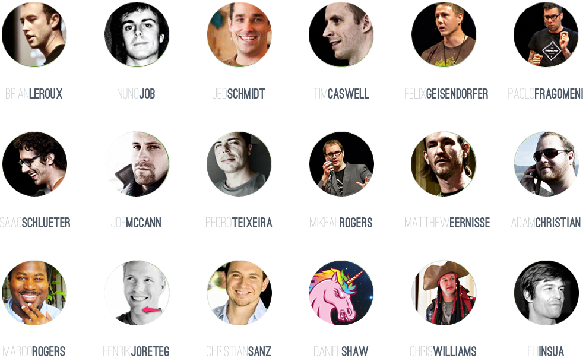

Streaming Templating
Why Would You Want That?
by Pedro Teixeira / @pgte
self.dump()
I'm from a portuguese Island called Madeira
I created and maintain some open-source Node.js modules
- nock
- pipeline
- woosh
- konphyg
- banzai
- mturk
- carrier
- fake-queue
- kinect
- ...
Author of 2 Node Books
Co-founder of The Node Firm
 thenodefirm.comEngineer At Nodejitsu

Streaming
Why?
Slow Clients
Mobile Clients
Streaming is the opposite of Buffering
This is particularly important when you have slow clients.
Slow clients are not compatible with buffering
Back-pressure
AKA "pausing the source stream until the target stream drains"
Meanwhile, in Node-land...
source_stream .pipe(filter_stream) .pipe(target_stream)
Less buffering
= Smaller memory profile
= Better scalability
"Streaming doesn't make your program go faster.
It makes it not die."
— Isaac Z. Schlueter
 ||
||
STREAM OR DIE
F*cking Templating
How does it work?
Typical workflow
- Read a file into memory
- Parse it
- Compile it
- Either
- Apply a Payload
- or
- Run it (E*) — ERB, EJS
- Push the output to the response body
Typical workflow
- Buffer
- CPU
- CPU
- CPU
- Buffer
The Streaming Way
Goals
- Reduce TTFB
- Minimize buffering
- Don't block! (CPU)
I need
- Streaming Parser (think SAX)
- Template Engine
Source Format
Pure HTML — What else?
Node Selector
CSS selectors are stream-friendly!
Yay!
Markup modifier / injector
JavaScript callbacks are your friends!
Trumpet
Selection example
var trumpet = require('trumpet');
var tr = trumpet();
tr.select('.b span', function (node) {
node.html(function (html) {
console.log(node.name + ': ' + html);
});
});
var fs = require('fs');
fs.createReadStream(__dirname + '/select.html')
.pipe(tr);select.html
<html>
<head>
<title>beep</title>
</head>
<body>
<div class="a">¡¡¡</div>
<div class="b">
<span>tacos</span>
<span>y</span>
<span>burritos</span>
</div>
<div class="a">!!!</div>
</body>
</html>output
$ node select.js
span: tacos
span: y
span: burritosUpdate Example
var trumpet = require('trumpet');
var tr = trumpet();
tr.update('.b span', function (html, node) {
return html.toUpperCase();
});
tr.update('.c', '---');
tr.remove('.d');
tr.remove('.e');
var fs = require('fs');
fs.createReadStream(__dirname + '/update.html')
.pipe(tr)
.pipe(process.stdout);update.html
<html>
<head>
<title>beep</title>
</head>
<body>
<div class="a">¡¡¡</div>
<div class="b">
<span>tacos</span>
<span>y</span>
<span>burritos</span>
</div>
<div class="a">!!!</div>
<div class="c">
<span>beep</span>
<span>boop</span>
</div>
<div class="d">
<span>x</span>
<span>y</span>
</div>
</body>
</html>output:
$ node update.js
<html>
<head>
<title>beep</title>
</head>
<body>
<div class="a">¡¡¡</div>
<div class="b">
<span>TACOS</span>
<span>Y</span>
<span>BURRITOS</span>
</div>
<div class="a">!!!</div>
<div class="c">---</div>
</body>
</html>This is great!
But what about composition?
In order to compose in streaming you have to be able to pause the parsers.
pgte/sax-pausable
pgte/woosh
Woosh is like trumpet
But on steroids
In woosh you can do everything like in trumpet
but return a stream:
tr.select('.c', function (node) {
node.update(function() {
var tr = trumpet();
fs.createReadStream(__dirname + '/partial.html')
.pipe(tr);
tr.select('.b span', function(node) {
node.update(function(html) {
return html.toUpperCase();
});
});
return tr;
});
});You can return any stream, really:
tr.select('.b span', function (node) {
node.update(function (html) {
var tr = trumpet();
fs.createReadStream(__dirname + '/partial.html')
.pipe(tr);
return tr;
});
});Benchmarks Motherf*cker!
Mustache vs. Woosh
Small file, no nesting
Mustache is ~10x faster